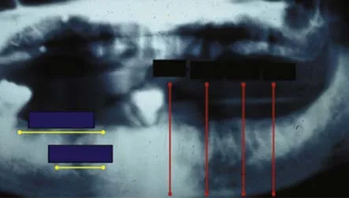

نسخه استخراجشده؛ ترجمه یا تأیید علمی انجام نشده است. وضعیت: captured
پریاپیکال و پانورامیک هر دو یک اشکال بنیادی مشترک دارند: تصویری دوبعدی از یک جسم سهبعدی میدهند. و مهمترین پیامدش این است که هیچ اطلاعاتی دربارهی وضعیت باکولینگوال استخوان آلوئولار منتقل نمیکنند — یعنی همان بُعدی که عرض ریج و انتخاب قطر ایمپلنت را تعیین میکند.
مشکل دوم بزرگنمایی است. هر دو روش با بزرگنمایی همراهاند که ناپایدار است و تعیین دقیقش دشوار. در پانورامیک، بزرگنمایی همیشه وجود دارد و متغیر است.
عدد نگرانکننده: بررسیها نشان دادهاند ۸۳ درصد اندازهگیریهای پانورامیک کمتر از واقعیت برآورد میشوند و بیشترین بزرگنمایی در ناحیهی قدامی دیده میشود. نتیجه: بهدلیل بزرگنمایی و اعوجاج ذاتی، محاسبهی اندازههای خطی روی تصویر پانورامیک نادقیق است.

پانورامیک از نظر تاریخی استاندارد طلایی ارزیابی محل ایمپلنت بوده، ولی معایبش شناخته شده است. بزرگنمایی افقی به فاصلهی جسم از مرکز لایهی کانونی بستگی دارد و از آناتومی بیمار و نحوهی قرارگیری او در دستگاه اثر میگیرد — یعنی حتی دو تصویر از یک بیمار میتوانند متفاوت باشند.
پس جایگاه درستش کجاست؟ پانورامیک برای دید کلی عالی است: غربالگری اولیه، دیدن پاتولوژی، ارزیابی کلی وضعیت دندانها و ارتفاع تقریبی. آنچه از آن نباید خواست، اندازهگیری دقیق و تصمیم دربارهی عرض است.
و پریاپیکال؟ رزولوشن بهتری میدهد و برای پایش استخوان کرستال حول ایمپلنتِ کارگذاشتهشده ارزشمند است — به شرط آنکه پرتو مرکزی عمود بر استخوان، جسم و فیلم باشد. ولی همچنان همان بُعد باکولینگوال را ندارد.